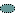

Artifacts >
Artifacts >
 Analysis & Design Artifact Set >
Analysis & Design Artifact Set >
 Design Model... >
Design Model... >

Use-Case Realization
 Artifacts >
Analysis & Design Artifact Set >
Design Model... >
Artifact:
| ||||||||||||||||||||||||||||||||||||
Use-Case Realization |
A use-case realization describes how a particular use case is realized within the design model, in terms of collaborating objects. |
| UML representation: | Collaboration, stereotyped as «use-case realization». |
| Role: | Designer |
| Templates: | |
| Reports: | |
| More information: | |
| Input to Activities: | Output from Activities: |
The purpose of the use-case realization is to separate the concerns of the specifiers of the system (as represented by the use-case model and the requirements of the system) from the concerns of the designers of the system. The use-case realization provides a construct in the design model which organizes artifacts related to the use case but which belong to the design model. These related artifacts consist typically of the collaboration and sequence diagrams which express the behavior of the use case in terms of collaborating objects.
|
Property Name |
Brief Description |
UML Representation |
| Flow of Events Design | A textual description of how the use case is realized in terms of collaborating objects. Its main purpose is to summarize the diagrams connected to the use case (see below), and to explain how they are related. Optional - created only if there is additional information needed for analysis or design which is not appropriate in the use cases itself; this is very rare. | Tagged value, of type "formatted text". |
| Interaction Diagrams | The diagrams (sequence and collaboration diagrams) describing how the use case is realized in terms of collaborating objects. | Participants are owned via aggregation "behaviors". |
| Class Diagrams | The diagrams describing the classes and relationships that participate in the realization of the use case. | Participants are owned via aggregation "types" and "relationships". |
| Derived Requirements | A textual description that collects all requirements, such as non-functional requirements, on the use-case realization that are not considered in the design model, but that need to be taken care of during implementation. | Tagged value, of type "short text". |
| Realization Association | A stereotyped dependency to the use case in the use-case model that is realized. | dependency |
A template is provided for a use-case realization specification, which contains the textual properties of the use-case realization. This document is used with a requirements management tool, such as Rational RequisitePro, for specifying and marking the requirements within the use-case realization properties.
The diagrams of the use-case realization can be developed in a visual modeling tool, such as Rational Rose. A use-case realization report (with all properties) may be generated with Rational SoDA.
For more information, see tool mentors: Managing Use Cases with Rational Rose and Rational RequisitePro and Creating a Use-Case Realization Report Using SoDA.
Use-case realizations are created in the Elaboration Phase for architecturally significant use cases. Use-case realizations for the remaining Use cases are created in the Construction Phase.
A use-case designer is responsible for the integrity of the use-case realization, and ensures that:
The use-case designer is not responsible for the classes and relationships employed in the use-case realization; instead, these are under the corresponding designer's responsibilities.
Use-case realizations express the behavior of a set of model elements performing some or all of an Artifact: Use Case. As a result, there should be a use-case realization for each use case which needs to be expressed in the design model. Similarly, if use cases are not used, then use-case realizations will also be omitted.
|
Rational Unified
Process
|